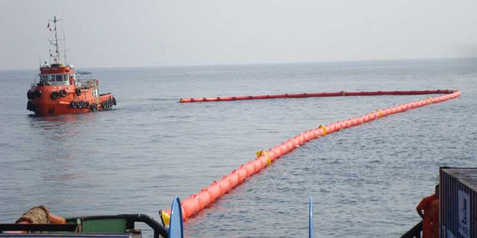
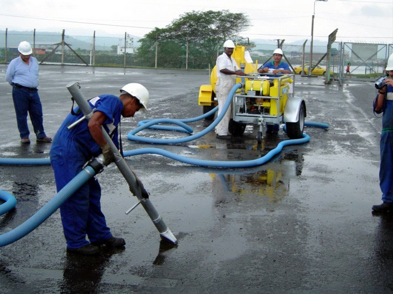
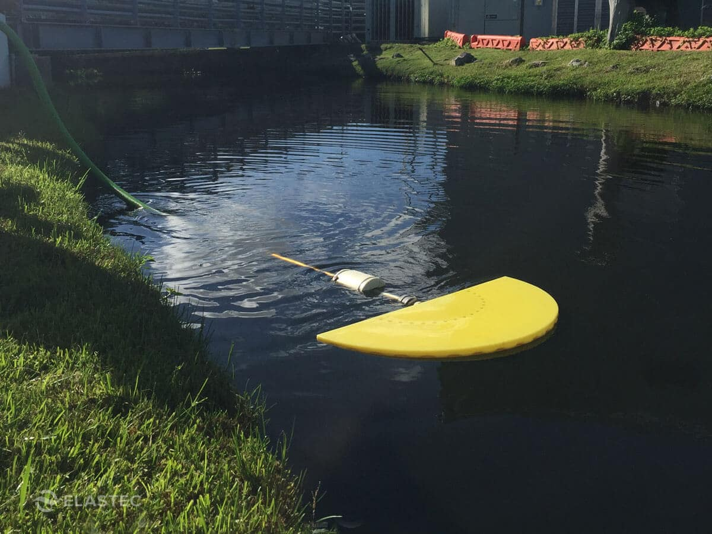
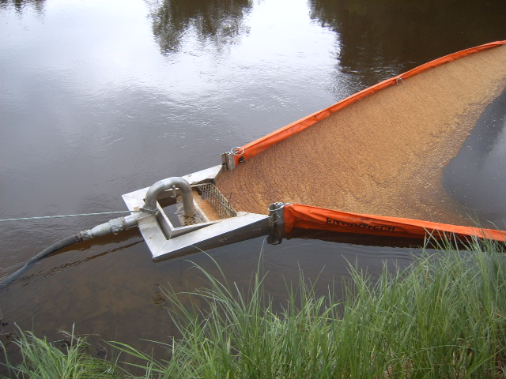
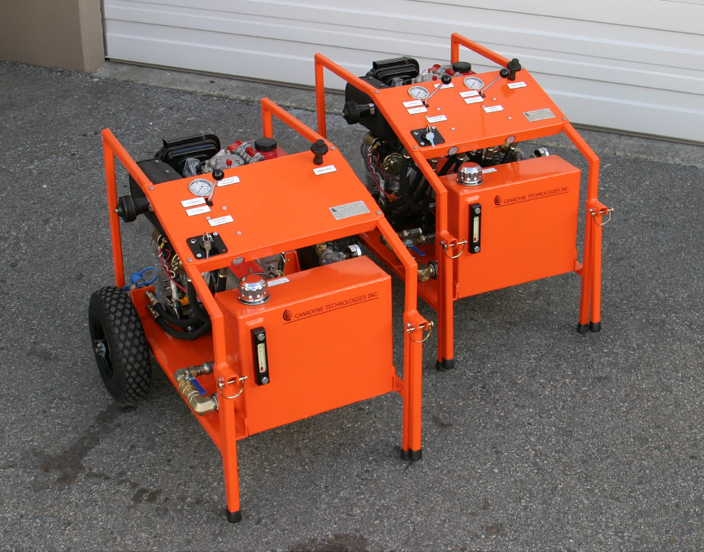

Oil spill recovery from solid surfaces (floor, land, roads, etc.) and water
require different approaches and is accomplished by different technique.
Though oil recovery from solid surfaces may require prior oil containment,
spreading of the spilled oil on such surfaces happen relatively slow, and
removal oil from floor, land, roads, etc. may be commenced without containment
of the spilled oil.
As for oil recovery from water, oil spill containment is almost always the
necessary step prior to oil removal. Whenever it is possible oil spill recovery
operation starts immediately after its controlled or even simultaneously with oil
containment. The reason for such “hurry” is to avoid operating with weathered oil,
which may be emulsified and have high viscosity.
The main two methods of oil recovery on solid surfaces and water are sorbent devices
and skimmers.
While sorbents are prevalent method for recovery of spilled hydrocarbon from floor,
roads, etc., skimmers (mechanical devices) are used frequently for oil removal from water.
There are wide range of skimmers in the market today, distinguished by principle of
operation, design, recovery capacity, efficiency, sizes etc. and intended for operation
in various conditions: depending on oil layer thickness, spilled oil properties, climatic
conditions, water conditions (open ocean, lakes, rivers, etc.) and many others.
INKAS® Environmental Protection Ltd supplies wide range of oil spill recovery equipment
for oil spill cleanup on water, land, floor, roads, etc. These include a line of proprietary
Inkas-Sorb® products and equipment made in cooperation with our partners.
Hamrock-Strata® Environmental Services can supply a range of containers for storage and transportation of
oil and oil products.

The vacuum unit is used for the removal of liquids, hard waste and oil sludge from ground or water surfaces. The vacuum units are the most efficient when used in combination with our sorbents Inkas-Sorb® MPU and Inkas-Sorb® Bits. The unit is easy to use in hard to reach places. The unit is less expensive than truck-mounted vacuum units. The unit can be trailer and/or skid mounted. Units mounted on trailers can be towed on public roads. The unit can be transported in a standard 20’ shipping container. The unit has been tested successfully in the toughest operating conditions.


The Pedco Skimmer is a simple yet effective weir-type skimmer. Low cost, zero maintenance and adaptability to a wide range of spill conditions make this one of the most popular skimmers available This skimmer is ideally suited to skimming operations in flowing waters. The built-in boom attachment points allow oil booms to channel flowing pollutants directly into the mouth of the skimmer. Weir automatically adjusts to match pumping speed. Slow speed for thin slicks, fast speed for thick slicks. Rugged, all aluminum construction. Model-1 with single suction port, Mode-2l with twin suction ports Use any suction source (suction pump, vacuum truck, etc.) Easily transported by two people.

Power Packs are used to power hydraulically operated spill response equipment. They are designed to be multipurpose and have the flexibility for use with skimmers, reels, and other equipment. Single control units are ideal for boom reels. Dual control units ideal for skimmers to allow independent control of skimmer speed and discharge pump speed. Available in wide range of power options—diesel, electric, gas. Various sizes available to power all types of equipment. Single or dual controls. Quick connection fittings. Rugged, welded aluminum construction. Heavy duty rubber tires and folding handles for ease of movement and compact storage. Fabricated components powder coated international orange.